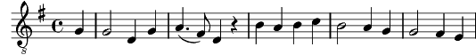

1. Adeste fideles
Laeti triumphantes:
Venite, venite
In Bethleem.
Refrain:
Natum videte,
Regem angelorum,
Venite adoremus (3x)
Dominum.
2. Engrege relicto,
Humiles ad cunas:
Vocati pastores
Approperant.
Refrain
3. Aeternis Parentis
Splendorem aeternum:
Velatum sub carne
Videbimus
Refrain
Coda:
Natum videte,
Regem angelorum,
Venite adoremus (3x)
Dominum.